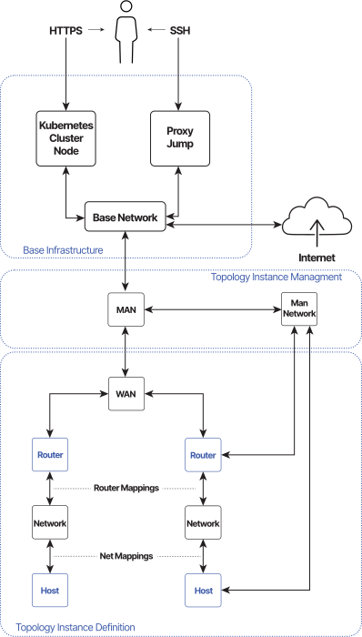

Sandbox Access
Sandbox#
A Topology Instance of a Sandbox is created in the cloud platform and connected to the Base Infrastructure, which mainly consists of 2 servers and a network.
- Kubernetes Cluster node: The server where the CyberRangeCZ Platform is installed.
- Proxy Jump: The server is used only for SSH access to all sandboxes.
- Base Network: The network where both servers and all sandboxes are connected through MAN (more about management nodes).

Note
For clarity reasons, there are missing links from man-network to the left Router and left Host.
Sandbox Access#
Sandbox access is divided into two major categories:
- Terminal Remote Access: Access to the remote sandbox node from the local command-line interface. It requires additional configuration. We differentiate two types based on privileges:
- Management access is available for those who manage sandboxes or CyberRangeCZ Platform (role
instructor). - User access is provided for everyone else (role
trainee).
- Management access is available for those who manage sandboxes or CyberRangeCZ Platform (role
- Web-based Access: Access to the remote sandbox node through the CyberRangeCZ Platform portal in the web browser is available for everyone. It is simpler because it doesn’t require any additional configuration. We support Apache Guacamole.
Terminal Remote Access#
Note
Windows users must install Git Bash or WSL. On Windows, all actions in Management access and User access to connect to the sandboxes have to be performed using the Git Bash or WSL console. Please note that creating the .ssh folder is not required. The’ Extract action’ will be created automatically using the unzip command.
Management Access#
Access to the sandbox nodes is through the Proxy Jump, and a MAN node as jump hosts and a man-network.
-
Download the SSH access zip file from Pool Overview page.
-
Extract the
ssh-access.zipfile to the.ssh/folder in your home directory.$ unzip ssh-access.zip -d ~/.ssh/Extracted files:
~/.ssh/pool-id-ID-sandbox-id-ID-management-config: the SSH configuration file.~/.ssh/pool-id-ID-management-key: the pool management SSH private key.~/.ssh/pool-id-ID-management-key.pub: the pool management SSH public key.
Note
The configuration file is generated for every sandbox of the pool.
-
Connect to any virtual machine specified in the SSH configuration file except Proxy Jump.
-
Connect directly to any virtual machine using SSH protocol, even a Windows machine, e.g.:
$ ssh -F ~/.ssh/pool-id-ID-sandbox-id-ID-management-config man -
Connect to any virtual machine using software that supports communication over SOCKS5 proxy.
First, create a local proxy on a port 12345:$ ssh -F ~/.ssh/pool-id-ID-sandbox-id-ID-management-config -N -D 12345 manThen connect to a virtual machine specified in the SSH configuration file over
socks5://localhost:12345proxy. -
If the communication software does not support SOCKS5 proxy like Windows RDP client,
use local port forwarding to bind the virtual machine’s port to your localhost.
For example, bind the virtual machine’s RDP server port 3389 to your local port 12345.
Virtual machine IP is specified in the SSH configuration file.$ ssh -F ~/.ssh/pool-id-ID-sandbox-id-ID-management-config -N -L 12345:<vm_ip>:3389 manThen use the RDP client and connect to a virtual machine using the
localhost:12345address.
-
User Access#
Access to the sandbox nodes is through the Proxy Jump, and a MAN node, as jump hosts and an accessible_by_user networks.
Sandbox definition set up
You will not be able to use this approach if you did not set up the sandbox definition correctly!
-
Set user access to networks in the sandbox definition file
topology.yml, e.g., set an attributeaccessible_by_userof the network to valueTrueor leave it undefined as it is a default value. See Topology Definition. -
Set user access to hosts connected to user-accessible networks, e.g., apply Ansible role user-access to specified hosts in the file
provisioning/playbook.ymlof the sandbox definition.
Warning
The SSH config file will be generated with the host’s directive User set to user-access, therefore setting variable user_access_username to value user-access modify the SSH config file later.
-
Download the SSH access zip file from Training Level of the Linear Training Run page with topology visualization (in case of Adaptive Training Run, download it from the Training Phase).
-
Extract the
ssh-access.zipfile to the~/.ssh/directory.$ unzip ssh-access.zip -d ~/.ssh/Extracted files:
~/.ssh/pool-id-ID-sandbox-id-ID-user-config: the SSH configuration file.~/.ssh/pool-id-ID-sandbox-id-ID-user-key: the sandbox user SSH private key.~/.ssh/pool-id-ID-sandbox-id-ID-user-key.pub: the sandbox user SSH public key.
-
Connect to any virtual machine specified in the SSH configuration file except Proxy Jump, MAN.
-
Connect directly to any virtual machine using SSH protocol, even a Windows machine, e.g.:
$ ssh -F ~/.ssh/pool-id-ID-sandbox-id-ID-user-config <vm_name> -
Connect to any virtual machine using software that supports communication over SOCKS5 proxy.
First, create a local proxy on a port 12345:$ ssh -F ~/.ssh/pool-id-ID-sandbox-id-ID-user-config -N -D 12345 manThen connect to a virtual machine specified in the SSH configuration file over
socks5://localhost:12345proxy. -
If the communication software does not support SOCKS5 proxy like Windows RDP client,
use local port forwarding to bind the virtual machine’s port to your localhost.
For example, bind the virtual machine’s RDP server port 3389 to your local port 12345.
Virtual machine IP is specified in the SSH configuration file.$ ssh -F ~/.ssh/pool-id-ID-sandbox-id-ID-user-config -N -L 12345:<vm_ip>:3389 manThen use the RDP client and connect to a virtual machine using the
localhost:12345address.
Web-based Access#
Simple access to the sandbox node from within the web browser is available through the CyberRangeCZ Platform portal from the sandbox topology. An instructor can display the topology on the Pool Detail page, and for trainees, the topology is always displayed during a training run in training levels. Right-click on the selected network node (host or router) in the network topology will open the menu with the following options (see VM manipulation:
- Open console: Opens the command-line interface (CLI) in Apache Guacamole application using the SSH protocol. This option is available only for routers and hosts with Linux-based operating systems.
- Open console (deprecated): Opens web browser-based user interface using Spice client. This option is available for all routers and hosts, but it doesn’t support the Copy & paste feature, and the response from the machine may be slow, so it seems that the console is freezing. Therefore it was marked as deprecated and we recommend using the other options to access the sandbox node.
- Open GUI: Opens graphical user interface (GUI) in Apache Guacamole application using the VNC or RDP protocol. This option can be available for all routers and hosts but depends on whether they are properly configured.
Credentials
A user must know the login credentials to access the sandbox node in all cases.
Simultaneous usage of Guacamole and Spice
Once a user logs into the Spice (using Open console (deprecated)), the Guacamole (Open Console) will not let the user log in unless they log out of the Spice session (just closing the tab with Spice is not enough).
Apache Guacamole#
An HTML5 web application supports graphical access to remote hosts directly in the browser. It is a clientless remote desktop gateway that supports standard protocols like VNC, RDP, and SSH. In the CyberRangeCZ Platform, all the mentioned protocols can be used, but the following conditions must be satisfied:
- SSH (only Linux-based system): The target host must have allowed password authentication. This can be done by setting up the following parameter in
/etc/ssh/sshd_config:
PasswordAuthentication yes - VNC (only Linux-based system): Requires running VNC server with possible login option. Configuration of the VNC server may vary based on the OS type and its version.
- RDP (Windows): Requires enabled Remote Desktop.
VNC & RDP
Besides the proper configuration, the image of the machines must have set the custom property owner_specified.openstack.gui_acess to true. Otherwise, the option Open GUI in the topology won’t be available.